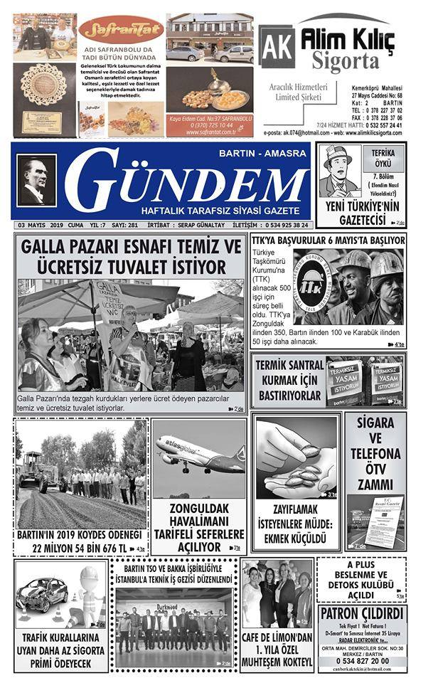

This section highlights the beginning of my design journey, rooted in my love for local journalism in Eskipazar. Working on the newspaper's layout and design gave me the opportunity to contribute to the community while honing my design skills. Each page became a canvas where I aimed to deliver both informative content and visually engaging experiences
_page-0001 (1).jpg)

As the founder of Zenozon, I designed and developed a brand focused on innovation and wellness. Our ozone sauna devices combine cutting-edge technology with health benefits, offering a unique solution for detox and relaxation. This section highlights the visual identity and branding work behind Zenozon, aiming to communicate trust, health, and quality through design.

At Mutfakkitap.com, I played a key role in editing and curating content for the e-commerce website. My responsibilities included producing both visual and written content to enhance the site’s user experience, ensuring that each product and article communicated clearly and effectively. This experience sharpened my skills in content strategy and creative production, blending design with purpose to drive customer engagement
In this video project, I explored the historical and architectural connection between the Kaaba and Petra, highlighting the intriguing parallels between these two iconic sites. The video delves into theories regarding their potential historical relationship, combining research with visual storytelling to present an engaging narrative.

Donec eget ex magna. Interdum et malesuada fames ac ante ipsum primis in faucibus. Pellentesque venenatis dolor imperdiet dolor mattis sagittis magna etiam.
_page-0001.jpg)